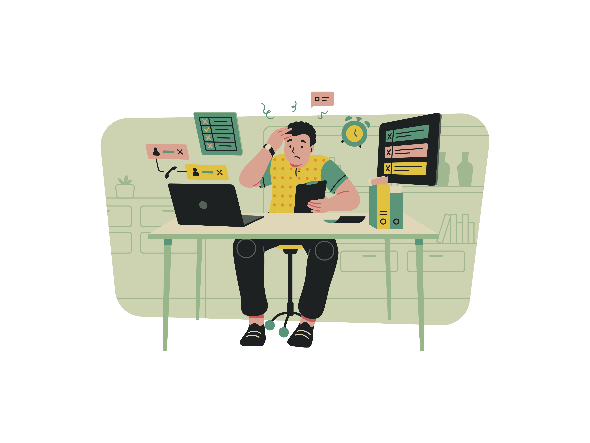
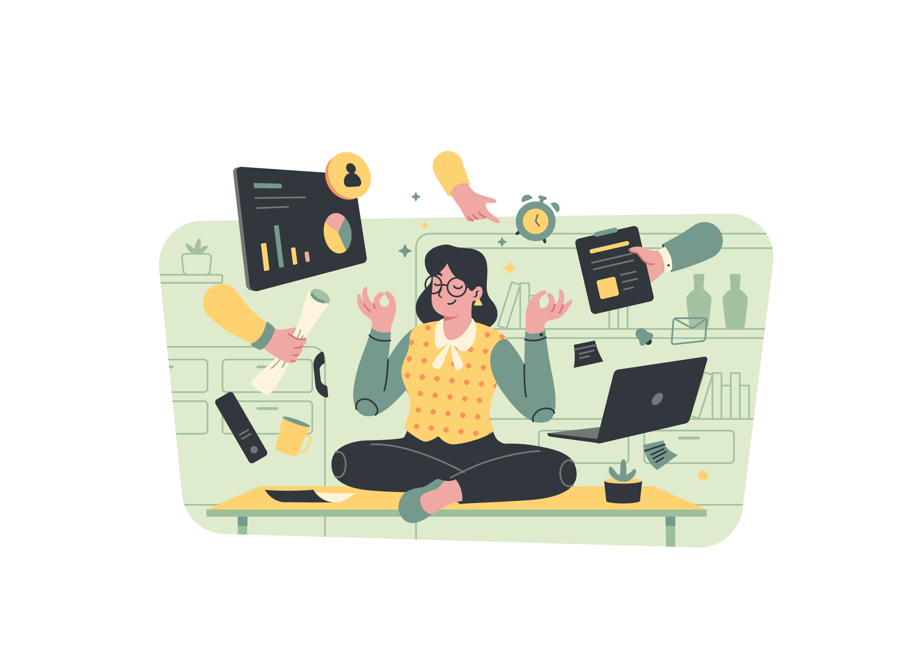

The Ups and Downs of Coding
October 13, 2024 by Naleka Beckford

Diving into coding feels like riding a rollercoaster, with its unexpected twists and thrilling highs. The joy of cracking a tough problem is followed by the disbelief of finding a single typo responsible for hours of frustration! Each language has its quirks, and learning them feels like deciphering secret codes. Python might feel smooth and intuitive, while Java or C++ can be dense and full of challenges, making the journey all the more interesting.
While the steep inclines can feel overwhelming, it's this very rollercoaster that keeps me coming back for more. Each twist and turn teaches resilience, adaptability, and the thrill of problem-solving. Even the moments of confusion are part of the process, and the sense of accomplishment after solving a tricky bug makes it all worthwhile. To others in tech: each loop brings growth, and every challenge builds confidence. Embrace the journey, trust the process, and know that with every twist, you’re becoming a stronger coder.
Finding the Fun in Coding
October 13, 2024 by Naleka Beckford

When I started coding, I expected it to be purely technical—a world of logic and function. But coding quickly revealed itself as a creative canvas, where each project becomes an opportunity to bring ideas to life. Styling a website with CSS, adding animations, and arranging elements all feel like artistic choices, transforming a blank screen into a digital landscape shaped by my vision. It’s not just about functionality; it’s about making things uniquely expressive and meaningful.
What truly draws me in is the thrill of problem-solving. Whether I'm writing logic in Java or adding interactivity with JavaScript, coding challenges my mind to think critically and creatively. Each new language, from CSS to JavaScript, opens up new possibilities, making every debugging session and design tweak a chance to experiment and explore. For any young female coder reading this, don’t underestimate the power of your unique perspective. Coding isn’t just technical; it’s a way to create something beautiful and impactful. Embrace your creativity, trust your instincts, and remember—your perspective brings something invaluable to the tech world.